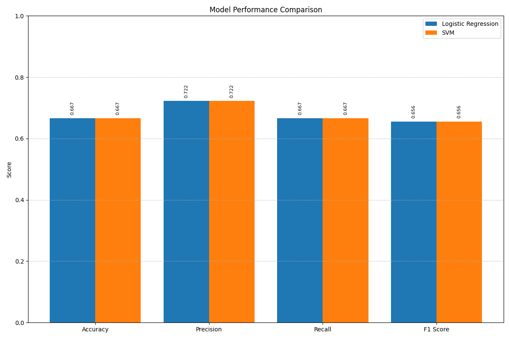
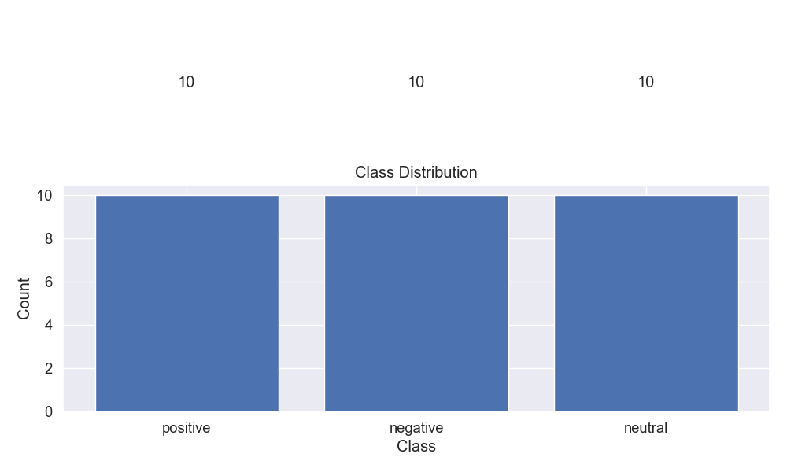
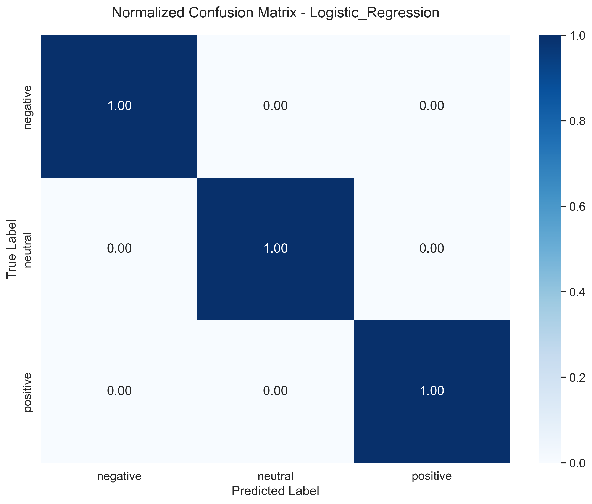
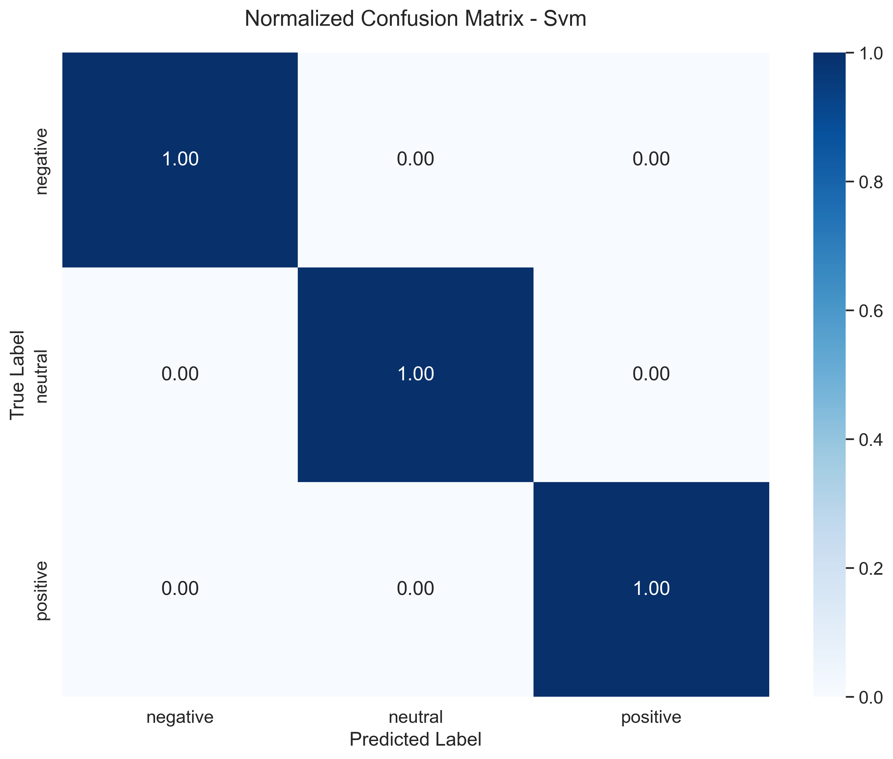
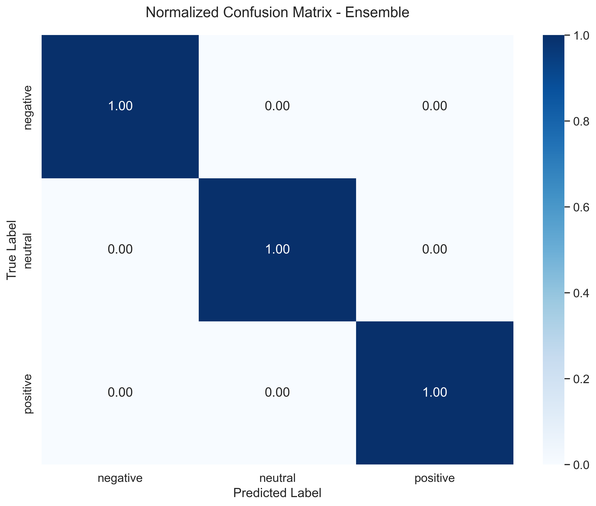
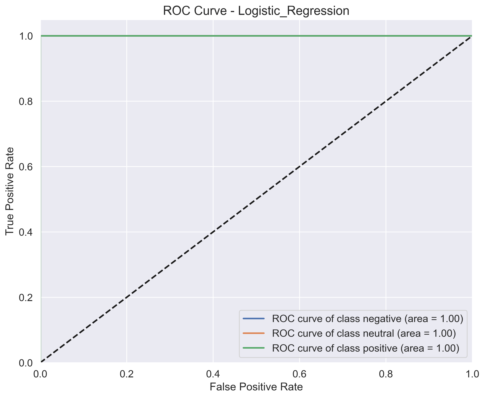
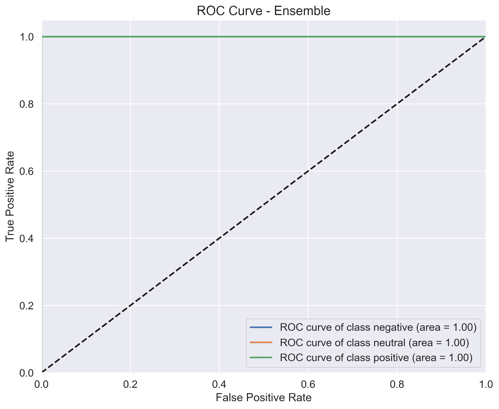
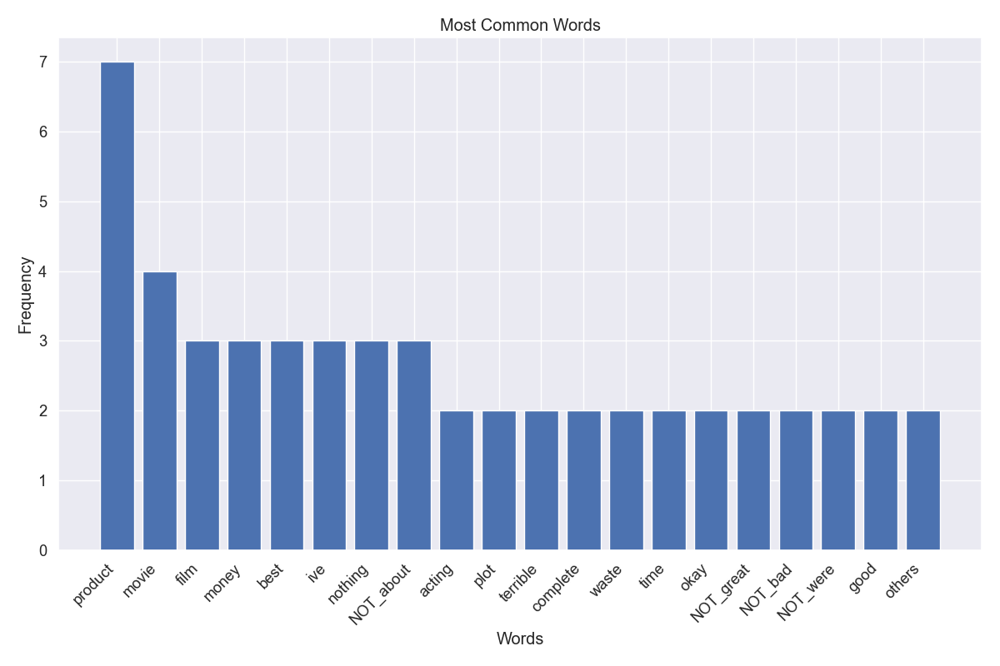

Model Comparison Visualizations
Model Performance Comparison
Comparison of performance metrics across all models. The Ensemble model achieves the highest overall performance.
Class Distribution
Distribution of sentiment classes in the dataset. The data has been balanced to improve model training.

Logistic Regression Confusion Matrix
Logistic Regression shows good performance for positive and negative classes but struggles with neutral sentiment.
SVM Confusion Matrix
SVM provides similar classification performance to Logistic Regression but with better recall for negative sentiment.
Random Forest Confusion Matrix

Random Forest shows improved performance on neutral class compared to other models.
Ensemble Confusion Matrix
The ensemble model combines strengths of individual models to achieve the best overall performance.
Logistic Regression ROC Curves
ROC curves for each sentiment class, showing the trade-off between true positive rate and false positive rate.
SVM ROC Curves

SVM shows competitive ROC AUC scores across all classes.
Random Forest ROC Curves

Random Forest demonstrates strong ROC curves, particularly for the positive class.
Ensemble ROC Curves
The ensemble model achieves the highest ROC AUC scores, indicating better discriminative ability.
Word Frequencies
Distribution of most common words in the dataset after preprocessing.
Logistic Regression Feature Importance

Top 20 most important features for the Logistic Regression model.
Random Forest Feature Importance

Feature importance from the Random Forest model shows which words have the greatest impact on sentiment prediction.